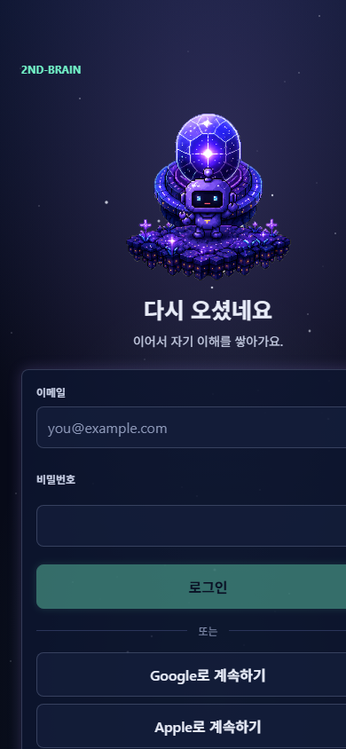
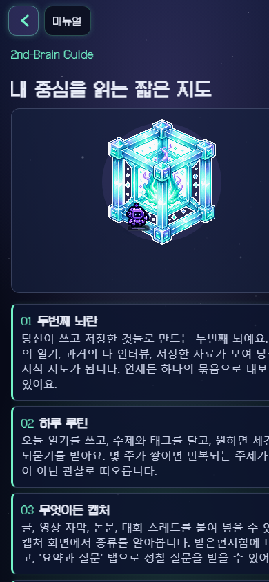
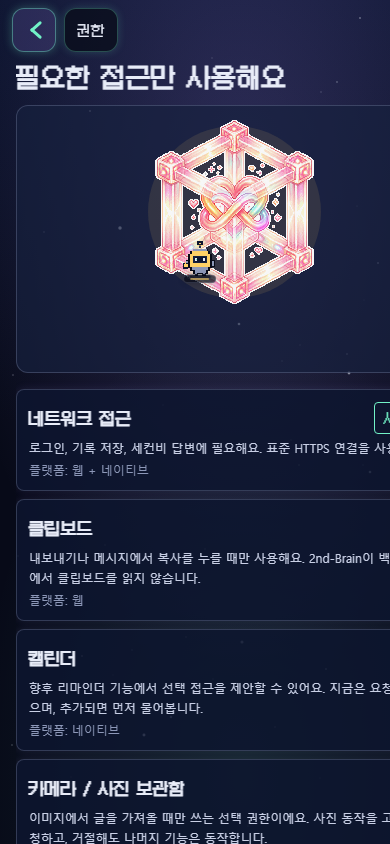

[2026-06-08 / 20:22:17 KST]
O-12 live mobile public visual check
Chrome headless fresh profile, 390x844, public live only. No credentials.
Findings
P1: /manual card text clips horizontally on 390px mobile.
P1: /permissions right-side status/action chip clips at the viewport edge.
Clean public / renders the sign-in screen, so authenticated graph/capture/settings still need a test account or emulator session.




Conclusion
3ff80f6 says Phase C P0/P1 all fixed/live, but public live still has visible mobile clipping on /manual and /permissions. Keep the mobile visual gate open until these wrap correctly and authenticated graph/settings are checked safely.